Boissons (23 recettes)
1 avis
ApéritifBoissons
Lillet Tonic {cocktail}
ApéritifBoissons
Margarita à la mangue et goyave
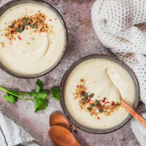
7 avisBoissonsRecettes VégétariennesSalé
Soupe de panais au cumin
13 avis
BoissonsRecettes VégétariennesSalé
Soupe de potiron carotte au lait de coco
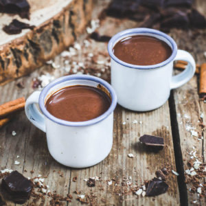
13 avisBoissonsBrunchRecettes Végétariennes
Chocolat chaud sans lactose
14 avis
BoissonsRepas LightSalé
Soupe de lentilles carottes et patate douce
11 avis
BoissonsBrunchRepas Light
Smoothie bowl sans lactose mangue ananas
13 avis
BoissonsSucré
Milkshake banane chocolat
3 avis
BoissonsRepas LightSucré
Smoothie bowl kiwi banane épinard
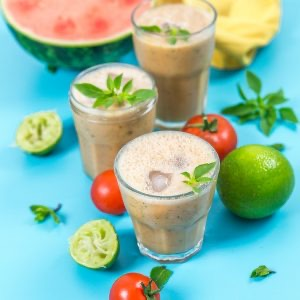
7 avisBoissonsSaléSucré
Gaspacho à la pastèque
11 avis
BoissonsBrunchRepas Light
Smoothie bowl chocolat
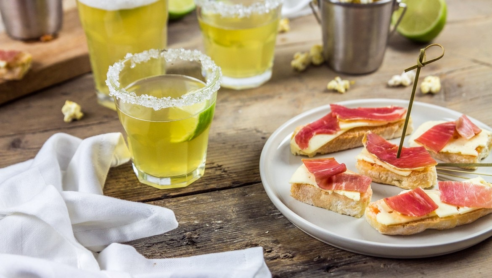
11 avisApéritifBoissonsSalé
Cocktail le sunflower et tapas pour un bon slow-drinker
29 avis
BoissonsNoëlSucré
Chocolat chaud maison
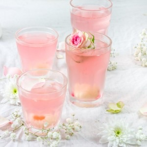
39 avisBoissonsSaint-Valentin
Cocktail au litchi, Prosecco et eau de rose
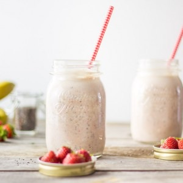
12 avisBoissonsBrunchSucré
Chia smoothie fraise banane
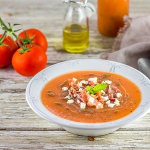
18 avisBoissonsRepas LightSalé
Gaspacho melon
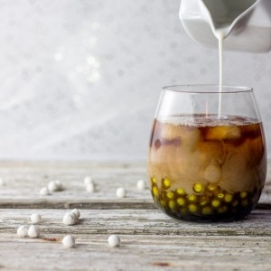
29 avisBoissonsSucré
Comment faire un bubble tea
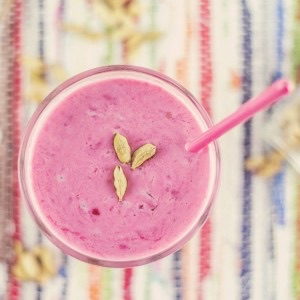
56 avisBoissonsDesserts du mondeSucré
Lassi framboise cardamome et fleur d’oranger
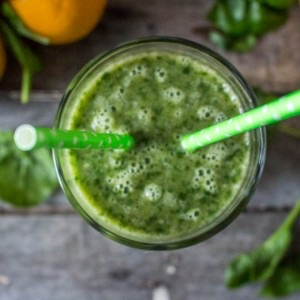
12 avisBoissonsSucré
Green smoothie ma boisson vitaminée du moment
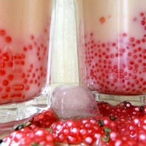
23 avisBoissons
Bubble Tea Maison
23 avis
Boissons
Authentique Café Frappé Grec
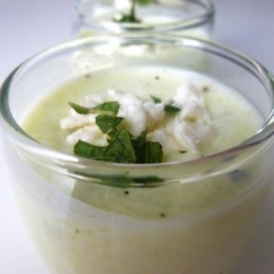
4 avisApéritifBoissonsSalé
Verrine concombre-feta-menthe
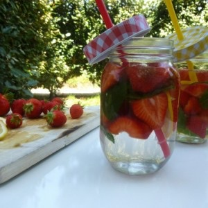
2 avisBoissonsSucré